Guardar
Sin panel. Guarda la pieza (.pms.json) en su proyecto. Atajo Ctrl+S
Gracias por elegir SolidMaker. Este manual le acompaña desde la primera vez que abre el programa hasta su primera pieza fabricada.
Cada pantalla, cada menú y cada herramienta aparece aquí con una captura real del programa y la explicación de sus campos: qué significa cada uno, en qué unidad se escribe y qué valor trae de fábrica. Si en algún momento no sabe qué hace un botón, búsquelo en el índice de herramientas: todas tienen su propio enlace.
Su software cuenta con los siguientes módulos. Todos trabajan sobre el mismo proyecto: la pieza que dibuja en PolarCAD es la misma que prueba en Laboratory, lamina en PolarSlicer y fabrica con Machin. Los módulos se eligen en la columna izquierda de la pantalla.
Diseño de piezas y ensambles. Es el módulo con el que se empieza.
Documentado Módulo 02Control y simulación de máquinas con su gemelo 3D.
Documentado Módulo 03Trayectorias de impresión cartesiana y polar.
Documentado Módulo 04Banco de pruebas: electrónica, PLC e interferencias.
Documentado Módulo 05Análisis de ingeniería y simulación de fluidos.
DocumentadoAl entrar a PolarCAD verá esta pantalla. Tiene cinco zonas, y conviene conocerlas antes de dibujar la primera línea.

Las dos filas de arriba. Aquí están todas las herramientas de dibujo y de operación.
Zona 2A la izquierda. Cambia de módulo y abre la configuración de cada herramienta y del objeto.
Zona 3El centro. Vistas, cubo de orientación y la grilla de trabajo.
Zona 4A la derecha. Sus proyectos, archivos y la biblioteca de piezas.
Zona 5Abajo. Plano activo, posición del cursor, selección y archivo abierto.
Observe en su pantalla la barra resaltada: corresponde a las herramientas. Está ordenada de izquierda a derecha en el mismo orden en que normalmente se trabaja.
Fila 1: el documento, el ensamble y el material; deshacer y rehacer; las herramientas de dibujo del croquis; curvas, anotación y edición.
Fila 2: las operaciones que convierten el croquis en sólido, los cortes, acabados, referencias, transformaciones, patrones, chapa, mecanizado y, al final, la vista y los ajustes.
Los botones con una flecha ▾ abren un menú. Debajo encontrará el índice completo: cada nombre lleva a la explicación de esa herramienta.
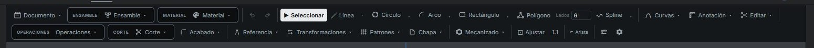
La columna vertical del borde izquierdo cambia de módulo: CAD, Laboratorio, Maquinado, Sistemas, Laminador polar y Análisis.
A su lado se despliega la Consola de herramientas. Desde ella encontrará la configuración de cada herramienta, así como la configuración del objeto seleccionado. Sus apartados son: Propiedades, Uniones, Interferencias, Relaciones, Material, Variables, Referencias, Medición y Plano 2D.
Cuando elige una operación de la barra, sus campos aparecen aquí con los botones Aplicar y Cancelar.

Arriba a la izquierda están las vistas Iso 3D, Superior, Perfil y Frontal; el ojo muestra u oculta elementos y P cambia la proyección. Debajo, tres botones: seleccionar, bloquear y capas.
El cubo de la esquina superior derecha indica la orientación y permite girar la vista con un clic en sus caras. La grilla del fondo mide 5 mm por cuadro (se cambia en Vista y ajustes).
El panel derecho se abre con la pestaña vertical Proyecto. Tiene tres pestañas: Archivos, Proyecto y Biblioteca.
Por su parte, la pestaña Proyecto cuenta con todos sus proyectos en forma de árbol, como el Explorador de Windows: cada carpeta se abre con [+] y guarda sus piezas, ensambles, exportaciones y versiones. Con + importar trae archivos de su equipo y con + proyecto crea uno nuevo. Al pasar el cursor sobre un proyecto aparecen los botones para crear carpeta, renombrar y eliminar.
La pestaña Biblioteca reúne 1 535 piezas normalizadas en 81 familias (tornillos, tuercas, rodamientos, perfiles, motores) listas para insertar.

La línea inferior del visor le dice en todo momento dónde está: Plano activo, Pos (coordenadas X, Y, Z del cursor en mm), Sel (lo seleccionado), Archivo abierto, estado del Kernel de geometría exacta y el tamaño de la Grilla. Debajo, el modo de trabajo (Diseño) y la sección actual.
Las herramientas marcadas como Próximamente ya aparecen en la barra pero todavía no están activas en esta versión.
Simulador y control de la máquina: carga un S-Code (.scode) del Laminador polar, lo reproduce en 3D sobre la máquina activa y lo envía a la máquina real por Bluetooth, WiFi o USB.
Zonas: barra superior (Ayuda, Máquina), panel izquierdo (coordenadas, jog, restricciones de hardware, ESP32, comunicación, disco θ), visor 3D con línea de tiempo abajo, panel derecho (Decodificador, instrucciones, demo de una capa, velocidad, ejecución y paros).
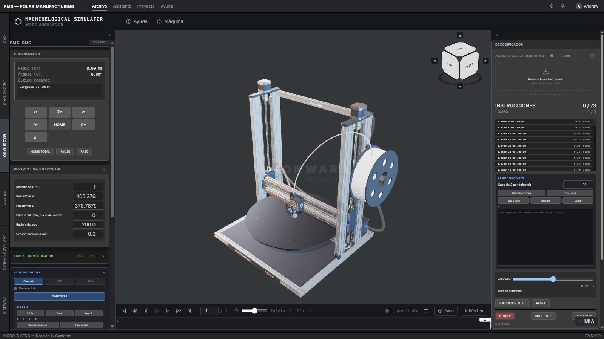
Unidad: ° · De fábrica: 1 · Rango u opciones: ≥ 0.0225
De fábrica: 405.376 · Rango u opciones: ≥ 1
De fábrica: 378.7879 · Rango u opciones: ≥ 1
Unidad: mm · De fábrica: 0 · Rango u opciones: ≥ 0
Unidad: mm · De fábrica: 200.0
Unidad: mm · De fábrica: 0.2 · Rango u opciones: ≥ 0.01
De fábrica: desactivado
Unidad: s · De fábrica: 40 · Rango u opciones: 20 a 3600
De fábrica: activado
De fábrica: activado
De fábrica: 0.3 · Rango u opciones: ≥ 0
De fábrica: 0.1 · Rango u opciones: ≥ 0
De fábrica: 0.02 · Rango u opciones: ≥ 0
Unidad: ° · De fábrica: 1.5 · Rango u opciones: ≥ 0.2
Unidad: mm/s · De fábrica: 25 · Rango u opciones: ≥ 1
Unidad: mm/s · De fábrica: 15 · Rango u opciones: ≥ 1
De fábrica: 400 · Rango u opciones: 0 a 20000
Unidad: s · De fábrica: 120 · Rango u opciones: ≥ 0
De fábrica: 1 · Rango u opciones: ≥ 1
De fábrica: 1
De fábrica: 2 · Rango u opciones: ≥ 1
Sin opciones adicionales.
De fábrica: 500 · Rango u opciones: 0 a 1000
Atajos de teclado
Menú de máquinas
Ocultar / mostrar panel izquierdo
Ir a la primera capa
Capa anterior
Instrucción anterior
Preparando datos de la pieza…
Instrucción siguiente
Capa siguiente
Ir a la última capa
Vista cinemática: cámara dramática + iluminación de taller
Generar demo cinematográfico (recorrido de ~26s con guion de cámara y rótulos) y exportarlo a video
Música para el demo (opcional): clic = elegir archivo · clic derecho = quitar
Ocultar / mostrar panel derecho
Modo manual: pegar datos BP/FD a mano
MIA: clic para hablar, clic derecho para escribir
Otros botones de esta vista ↺ · Z+ · ↻ · R- · HOME · R+ · Z- · HOME TOTAL · PAUSE · PASO · Bluetooth · WiFi · USB · CONECTAR · Iniciar · Parar · Invertir · Guardar posición · Fijar origen · Reiniciar alineación θ · Depuración · Ver instrucciones · Enviar capa · Paso a paso · Detener · Copiar · EJECUCIÓN AUTO · RESET · E-STOP · SOFT STOP · REANUDAR
Sin controles propios: los que se ven están listados en otra sección.
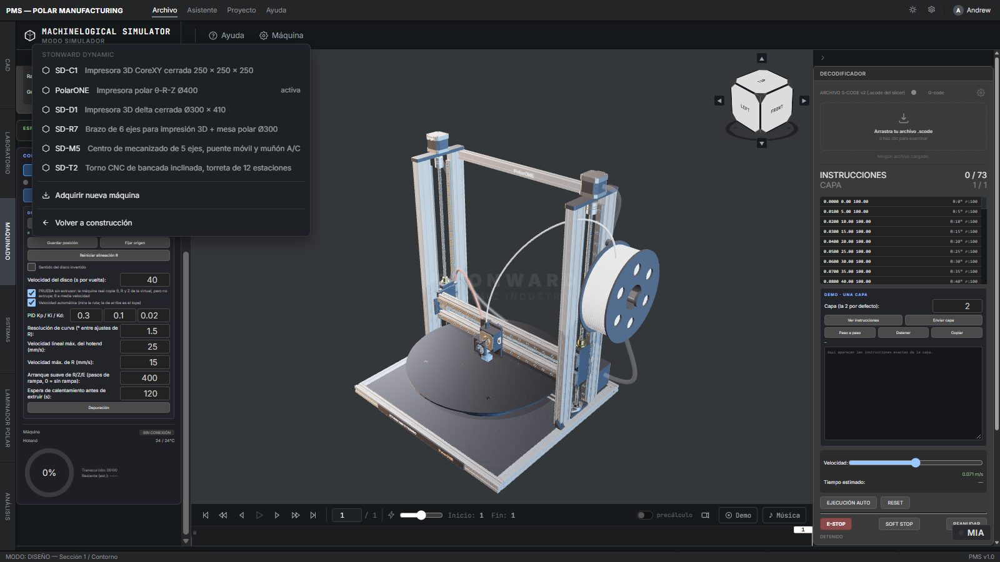
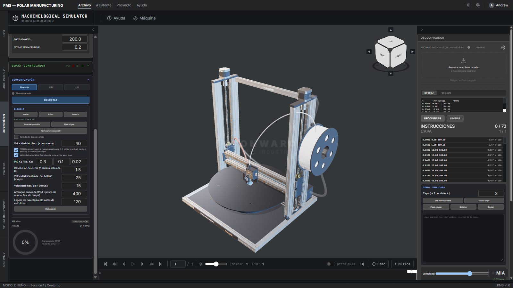
De fábrica: t theta(deg) r(mm) 0.0000 0.00 100.00 0.0100 5.00 100.00 0.0200 10.00 100.00 0.0300 15.00 100.00 0.0400 20.00 100.00 0.0500 25.00 100.00 0.0600 30.00 100.00 0.0700 35.00 100.00 0.0800 40.00 100.00 0.0900 45.00 100.00 0.1000 50.00 100.00 0.1100 55.00 100.00 0.1200 60.00 100.00 0.1300 65.00 100.00 0.1400 70.00 100.00 0.1500 75.00 100.00 0.1600 80.00 100.00 0.1700 85.00 100.00 0.1800 90.00 100.00 0.1900 95.00 100.00 0.2000 100.00 100.00 0.2100 105.00 100.00 0.2200 110.00 100.00 0.2300 115.00 100.00 0.2400 120.00 100.00 0.2500 125.00 100.00 0.2600 130.00 100.00 0.2700 135.00 100.00 0.2800 140.00 100.00 0.2900 145.00 100.00 0.3000 150.00 100.00 0.3100 155.00 100.00 0.3200 160.00 100.00 0.3300 165.00 100.00 0.3400 170.00 100.00 0.3500 175.00 100.00 0.3600 180.00 100.00 0.3700 185.00 100.00 0.3800 190.00 100.00 0.3900 195.00 100.00 0.4000 200.00 100.00 0.4100 205.00 100.00 0.4200 210.00 100.00 0.4300 215.00 100.00 0.4400 220.00 100.00 0.4500 225.00 100.00 0.4600 230.00 100.00 0.4700 235.00 100.00 0.4800 240.00 100.00 0.4900 245.00 100.00 0.5000 250.00 100.00 0.5100 255.00 100.00 0.5200 260.00 100.00 0.5300 265.00 100.00 0.5400 270.00 100.00 0.5500 275.00 100.00 0.5600 280.00 100.00 0.5700 285.00 100.00 0.5800 290.00 100.00 0.5900 295.00 100.00 0.6000 300.00 100.00 0.6100 305.00 100.00 0.6200 310.00 100.00 0.6300 315.00 100.00 0.6400 320.00 100.00 0.6500 325.00 100.00 0.6600 330.00 100.00 0.6700 335.00 100.00 0.6800 340.00 100.00 0.6900 345.00 100.00 0.7000 350.00 100.00 0.7100 355.00 100.00 0.7200 360.00 100.00
Otros botones de esta vista BP (t,θ,r) · FD (coef) · DECODIFICAR · LIMPIAR
Prepara una pieza STL para imprimir en la máquina polar: la coloca en el disco, la rebana en capas y genera el S-Code (cinemática polar θ, r, z), que se descarga o se envía a Machin.
El panel izquierdo es un acordeón: cada captura muestra una sección abierta con sus subsecciones. El botón final «Rebanar y generar S-code» se activa cuando hay una pieza cargada.
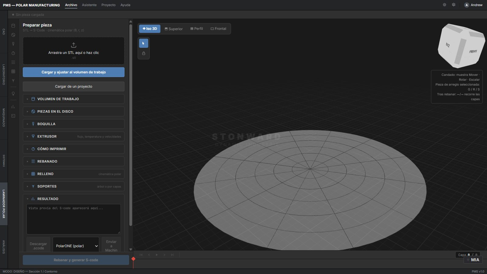
Elegir la pieza de un proyecto del Gestor (con vista previa). El S-code se guarda como rama bajo su STL.
Vista isométrica
Vista superior
Vista lateral
Vista frontal
Seleccionar [V]
Mostrar / ocultar Mover · Rotar · Escalar
Primera capa (Home)
Capa anterior (←)
Reproducir
Capa siguiente (→)
Última capa (End)
MIA: clic para hablar, clic derecho para escribir
Otros botones de esta vista Cargar y ajustar al volumen de trabajo · VOLUMEN DE TRABAJO · PIEZAS EN EL DISCO · BOQUILLA · EXTRUSOR flujo, temperatura y velocidades · CÓMO IMPRIMIR · REBANADO · RELLENO cinemática polar · SOPORTES árbol o por capas · RESULTADO · REGISTRO · Rebanar y generar S-code
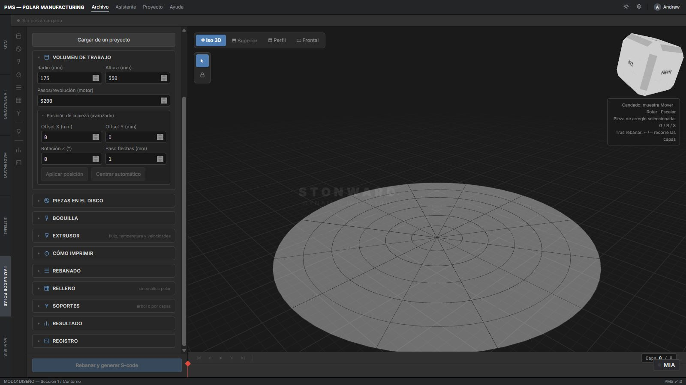
Unidad: mm · De fábrica: 175
Unidad: mm · De fábrica: 350
De fábrica: 3200
Unidad: mm · De fábrica: 0
Unidad: mm · De fábrica: 0
Unidad: ° · De fábrica: 0
Unidad: mm · De fábrica: 1
Otros botones de esta vista Posición de la pieza (avanzado) · Aplicar posición · Centrar automático
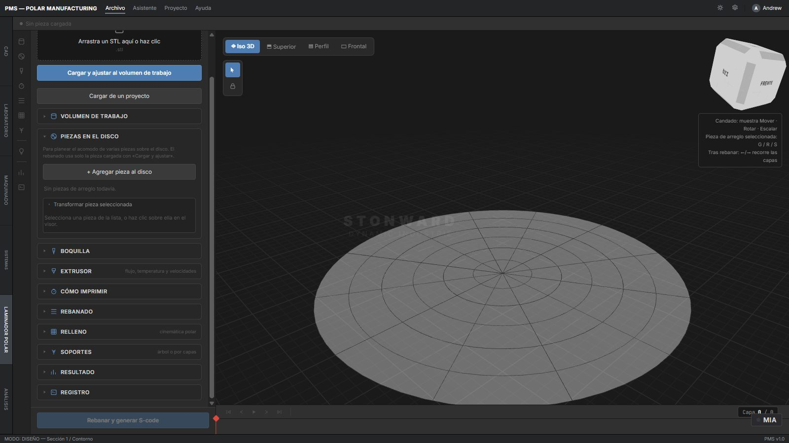
Otros botones de esta vista + Agregar pieza al disco · Transformar pieza seleccionada
Unidad: mm · De fábrica: 0.4 · Rango u opciones: ≥ 0.1
De fábrica: activado
De fábrica: Filamento · Rango u opciones: Filamento / Pasta / Pellet
Unidad: mm · De fábrica: 1.75 · Rango u opciones: ≥ 0.1
De fábrica: 1.00 · Rango u opciones: ≥ 0.01
Unidad: % · De fábrica: 100 · Rango u opciones: 0 a 100
Unidad: °C · De fábrica: 210 · Rango u opciones: ≥ 0
Unidad: °C · De fábrica: 60 · Rango u opciones: ≥ 0
Unidad: mm · De fábrica: 1.0 · Rango u opciones: ≥ 0
Unidad: mm/s · De fábrica: 30 · Rango u opciones: ≥ 0.1
Unidad: mm · De fábrica: 2 · Rango u opciones: ≥ 0
Unidad: mm/s · De fábrica: 20 · Rango u opciones: ≥ 0.1
Unidad: mm/s · De fábrica: 30 · Rango u opciones: ≥ 0.1
Unidad: mm/s · De fábrica: 60 · Rango u opciones: ≥ 0.1
Unidad: mm/s · De fábrica: 60 · Rango u opciones: ≥ 0.1
Unidad: mm/s · De fábrica: 25 · Rango u opciones: ≥ 0.1
Unidad: mm/s · De fábrica: 120 · Rango u opciones: ≥ 0.1
Otros botones de esta vista Retracción · Velocidades (mm/s)
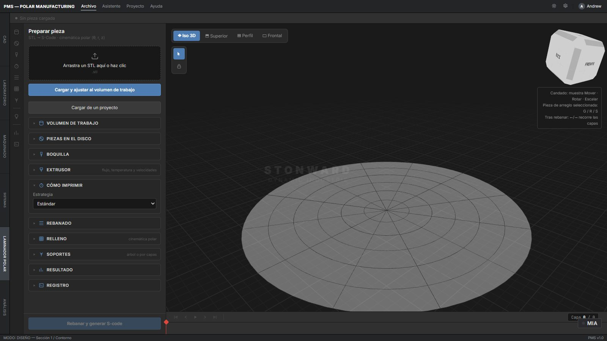
De fábrica: Estándar · Rango u opciones: Estándar / Rápida (menos material) / Resistente (más pared y relleno) / Personalizado
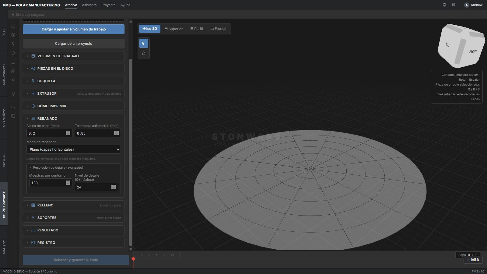
Unidad: mm · De fábrica: 0.2
Unidad: mm · De fábrica: 0.05
De fábrica: Plano (capas horizontales) · Rango u opciones: Plano (capas horizontales) / Diagonal (planos inclinados) / Elíptico (capas curvas)
De fábrica: 180
De fábrica: 24
Otros botones de esta vista Resolución de detalle (avanzado)
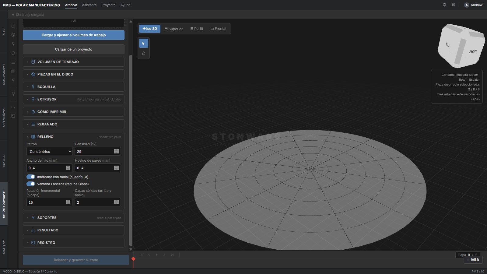
De fábrica: Concéntrico · Rango u opciones: Concéntrico / Cebolla (concéntrico + radial) / Radial simple / Radial compensado (densidad pareja) / Radial rotado (malla fina) / Espiral de Arquímedes / Espiral doble entrelazada / Espiral logarítmica / Panal polar
Unidad: % · De fábrica: 20 · Rango u opciones: 0 a 100
Unidad: mm · De fábrica: 0.4
Unidad: mm · De fábrica: 0.4
De fábrica: activado
De fábrica: activado
De fábrica: 15
De fábrica: 2 · Rango u opciones: ≥ 0
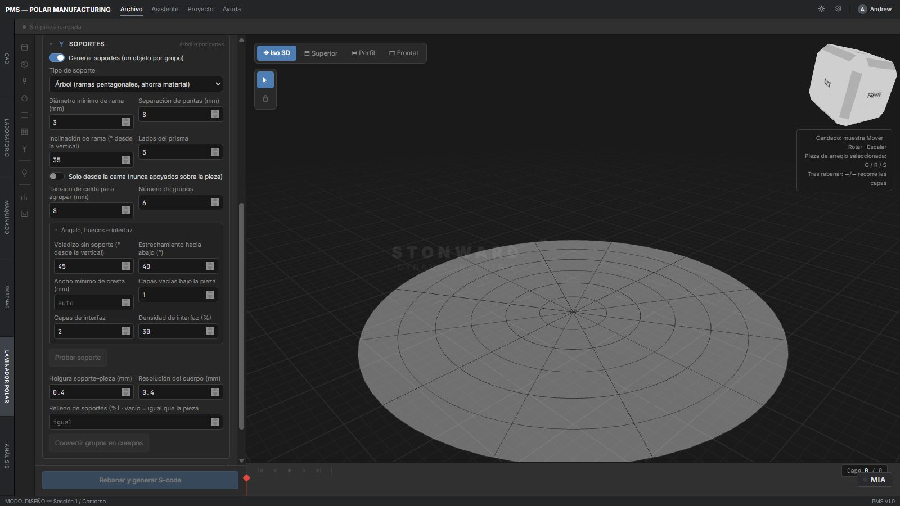
De fábrica: activado
De fábrica: Árbol (ramas pentagonales, ahorra material) · Rango u opciones: Árbol (ramas pentagonales, ahorra material) / Por capas (bloque bajo cada voladizo) / Cascada (se estrecha hacia la cama) / Columnas rectas (popotes)
Unidad: mm · De fábrica: 3 · Rango u opciones: ≥ 1
Unidad: mm · De fábrica: 8 · Rango u opciones: ≥ 2
Unidad: ° · De fábrica: 35 · Rango u opciones: 5 a 70
De fábrica: 5 · Rango u opciones: 3 a 12
De fábrica: desactivado
Unidad: mm · De fábrica: 8 · Rango u opciones: ≥ 1
De fábrica: 6 · Rango u opciones: ≥ 1
Unidad: ° · De fábrica: 45 · Rango u opciones: 1 a 89
Unidad: ° · De fábrica: 40 · Rango u opciones: 0 a 89
Unidad: mm · Rango u opciones: ≥ 0
De fábrica: 1 · Rango u opciones: ≥ 0
De fábrica: 2 · Rango u opciones: ≥ 0
Unidad: % · De fábrica: 30 · Rango u opciones: 5 a 100
Unidad: mm · De fábrica: 0.4 · Rango u opciones: ≥ 0
Unidad: mm · De fábrica: 0.4 · Rango u opciones: ≥ 0.05
Unidad: % · Rango u opciones: 0 a 100
Otros botones de esta vista Ángulo, huecos e interfaz · Probar soporte · Convertir grupos en cuerpos
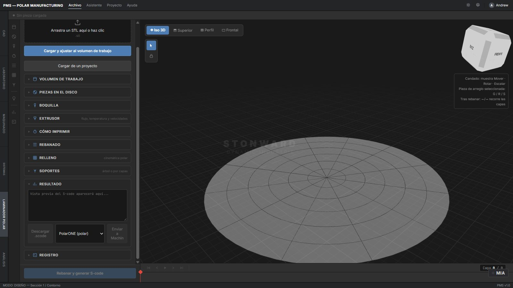
Sin opciones adicionales.
De fábrica: PolarONE (polar) · Rango u opciones: PolarONE (polar) / SD-D1 (delta) / SD-M5 (5 ejes) / SD-R7 (brazo) / SD-C1 (cartesiana) / SD-T2 (torno)
Otros botones de esta vista Descargar.scode · Enviar a Machin
Sin controles propios: los que se ven están listados en otra sección.
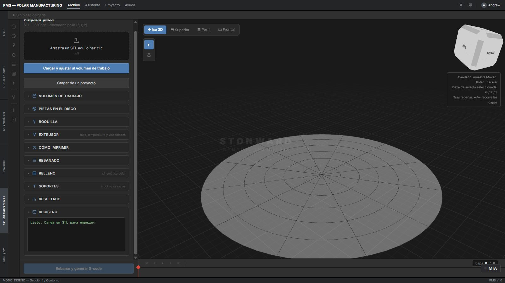
Banco de ensamble: importa piezas STL o de un proyecto, las une con mates, revisa interferencias, simula cinemática y física, y conecta electrónica y control (paneles, placas, cableado, PLC/Ladder).
Arriba hay pestañas de modo (Proyecto, Cinemática, Simulación, Electrónica, Control); cada una cambia la cinta de botones y el panel izquierdo. A la derecha, un riel de iconos abre paneles deslizables (Proyecto, Interferencias, Material, Propiedades, Relaciones, Diagnóstico de malla).
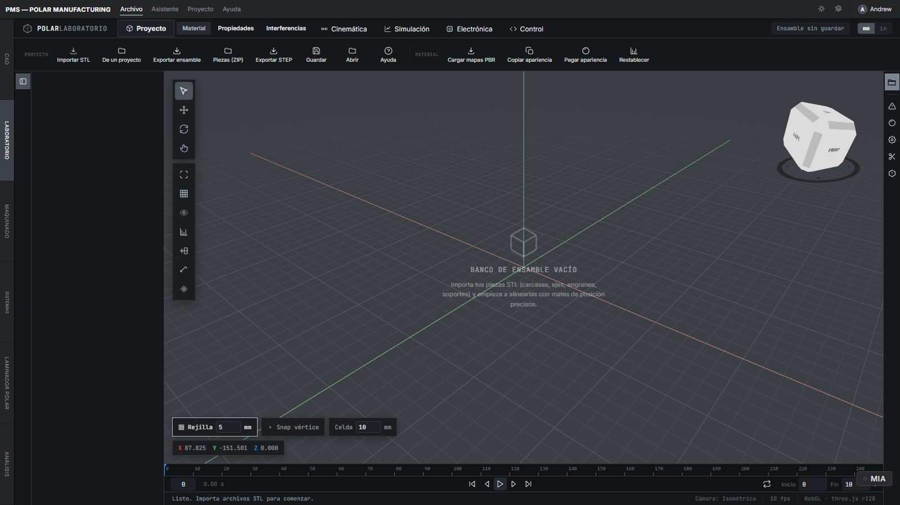
Unidad: mm · De fábrica: 5 · Rango u opciones: ≥ 0.1
Unidad: mm · De fábrica: 10 · Rango u opciones: ≥ 1
Unidad: s · De fábrica: 0
Unidad: s · De fábrica: 10
Importar uno o varios archivos STL del equipo
Importar piezas de CAD desde un proyecto, con vista previa (una o todas las de una carpeta)
Un solo STL fusionado con las piezas visibles
Cada pieza como.stl independiente, ya posicionada
Sólidos reales vía kernel CadQuery/OCCT
Guardar el ensamble en su proyecto (.bench.json) · Ctrl+S · Ctrl+Mayús+S = Guardar como
Abrir un ensamble (.bench.json) de un proyecto, o un.zip del equipo
Atajos de teclado
Albedo, normal, rugosidad, metalicidad y AO (el tipo se reconoce por el nombre del archivo)
Copia color, acabado y mapas de la pieza activa
Pega la apariencia copiada en la selección
Quita mapas y vuelve al plástico mate
Ocultar / mostrar panel de piezas y mates
Seleccionar (Q)
Mover (G)
Rotar (E)
Interactuar (I · o Alt+clic): usa la simulación sin seleccionar ni mover piezas — pulsa botones, gira perillas, pulsa contactos del ladder
Encuadrar todo (F)
Alternar wireframe (Z)
Modo transparencia (rayos X)
Ocultar referencias (grilla, ejes, contornos de selección/interferencia)
Vista de sección (corte)
Medir distancia entre dos puntos
Vista explosionada (desensamblar por ejes)
Ir al inicio
Cuadro anterior
Reproducir (Espacio)
Cuadro siguiente
Ir al final
Repetir en bucle
Proyecto: el mismo panel de CAD (proyectos, piezas, Biblioteca). Doble clic en una pieza la trae al Laboratorio con su nombre, color y material.
Interferencias
Material
Propiedades de la pieza
Relaciones entre piezas
Diagnóstico de malla
MIA: clic para hablar, clic derecho para escribir
Otros botones de esta vista Proyecto · Material · Propiedades · Interferencias · Cinemática · Simulación · Electrónica · Control · mm · in
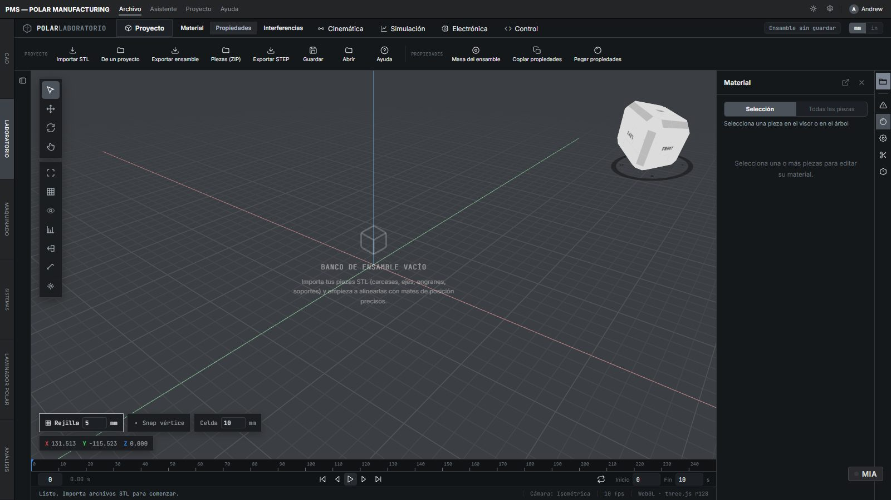
Suma la masa de todas las piezas con material asignado
Sacar como ventana flotante
Otros botones de esta vista Copiar propiedades · Pegar propiedades · Selección · Todas las piezas
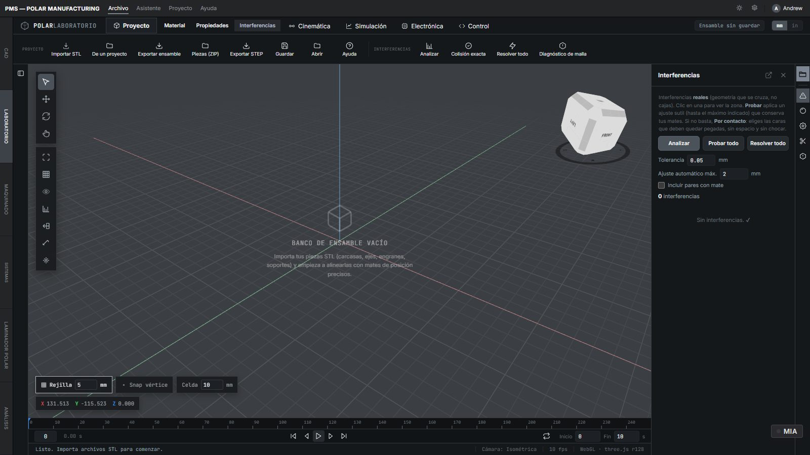
Unidad: mm · De fábrica: 0.05 · Rango u opciones: ≥ 0
Unidad: mm · De fábrica: 2 · Rango u opciones: ≥ 0.1
De fábrica: desactivado
Busca interferencias reales
Verificación booleana exacta (kernel)
Calcula y acepta todas las soluciones
Mallas abiertas / reparación
Aplica todas las soluciones en vista previa, sin confirmarlas
Calcula y acepta todas las soluciones automáticamente
Otros botones de esta vista Analizar
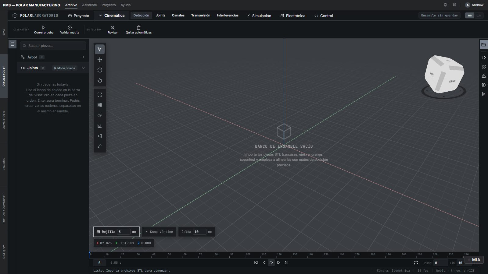
Sin opciones adicionales.
Recorre la línea de tiempo y reporta colisiones y límites
Detecta ciclos y scripts con errores
Lista las relaciones cinemáticas que Laboratorio reconoce (husillo + tuerca, riel + carro, engranes, ejes…) para aplicarlas
Borra las juntas creadas por la detección
Anima todos los canales activados entre su mínimo y máximo
Scripts
Canales y matriz (0)
Otros botones de esta vista Detección · Joints · Canales · Transmisión
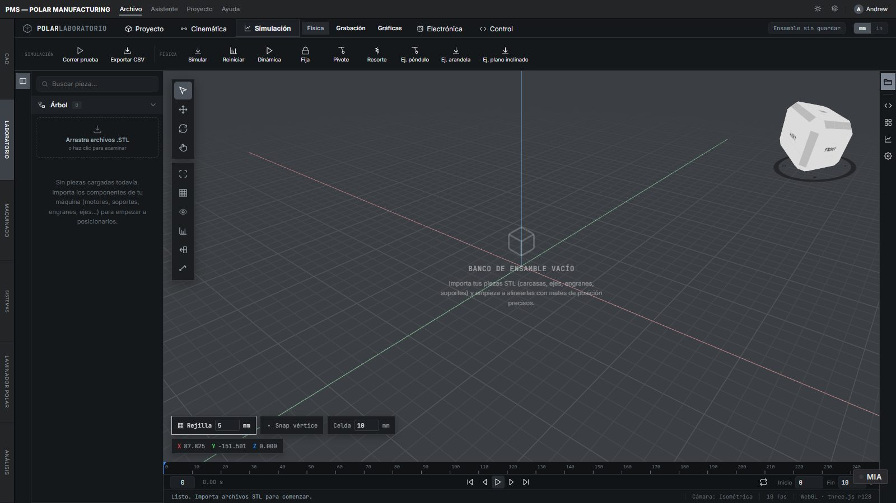
Datos de todos los canales
Gravedad, contacto y fricción. Pulsa otra vez para pausar
Devuelve las piezas a donde estaban antes de simular
Las piezas seleccionadas caen y chocan al simular
Las piezas seleccionadas no se mueven con la física
Péndulo: la pieza activa oscila desde su borde superior (con Ctrl, elige antes el soporte)
Resorte entre 2 piezas: primero el soporte, luego con Ctrl la que cuelga
Agrega un péndulo listo para simular
Una arandela que cae a lo largo de un tubo
Un bloque que resbala por un plano inclinado
Gráficas
Otros botones de esta vista Física · Grabación · Gráficas · Correr prueba
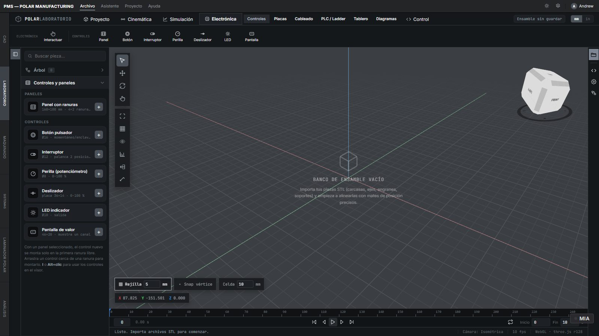
Usar botones, perillas y deslizadores en el visor (I)
Panel con ranuras
Agregar
Diagramas de bloques
Otros botones de esta vista Controles · Placas · Cableado · PLC / Ladder · Tablero · Diagramas · Interruptor · Perilla · Deslizador · LED · Pantalla
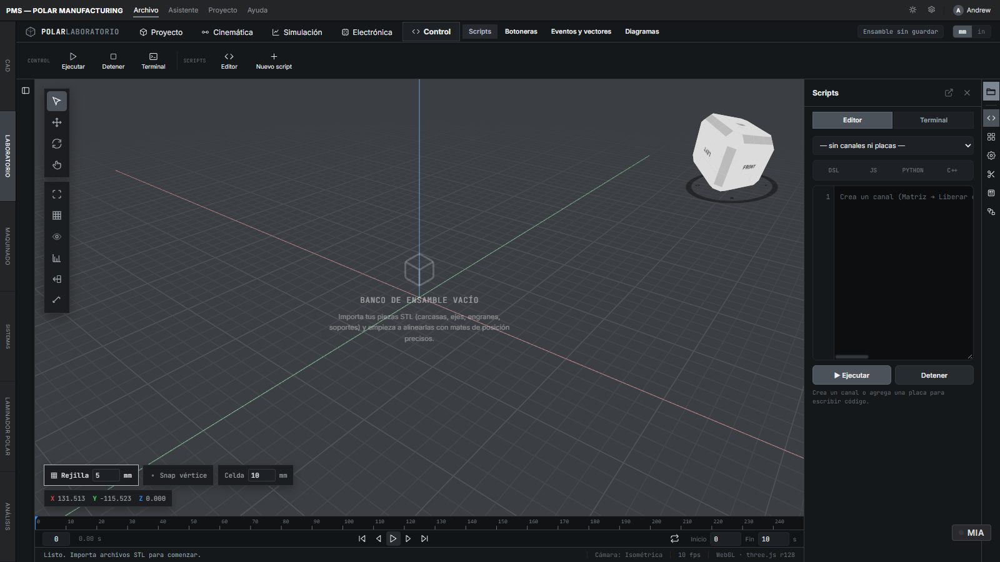
De fábrica: — sin canales ni placas — · Rango u opciones: — sin canales ni placas —
Sin opciones adicionales.
Botoneras
Otros botones de esta vista Scripts · Botoneras · Eventos y vectores · Ejecutar · Detener · Terminal · Editor · Nuevo script · Editor · Terminal · DSL · JS · PYTHON · C++ · Ejecutar · Detener
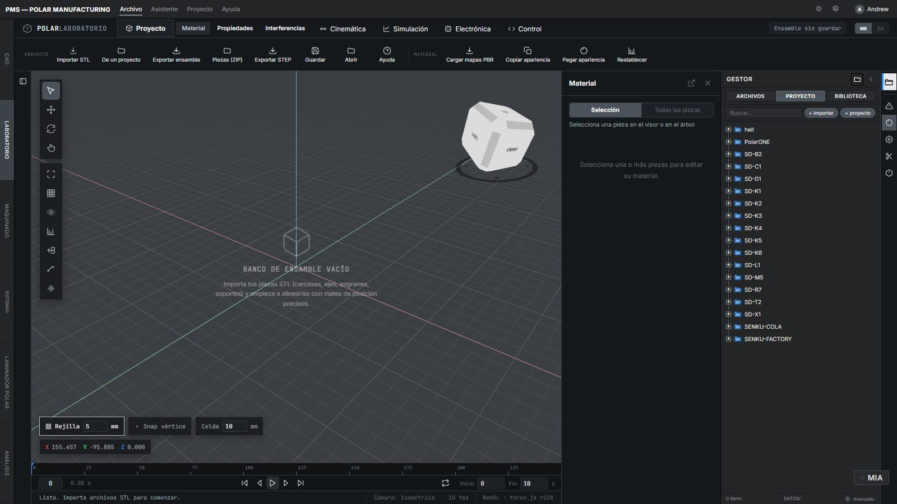
Sin opciones adicionales.
Gestor de archivos y proyectos
Ocultar panel
Piezas genéricas hechas con CadQuery
Importar archivos o una carpeta completa (STEP/IGS/STL/OBJ/SVG/DXF/PDF)
Crear proyecto nuevo
Abrir en CAD todas las piezas de este proyecto
Nueva carpeta aquí
Renombrar
Eliminar el proyecto completo
Configuración avanzada del Gestor
Otros botones de esta vista ARCHIVOS · PROYECTO
Sin controles propios: los que se ven están listados en otra sección.
Sin controles propios: los que se ven están listados en otra sección.
Sin controles propios: los que se ven están listados en otra sección.
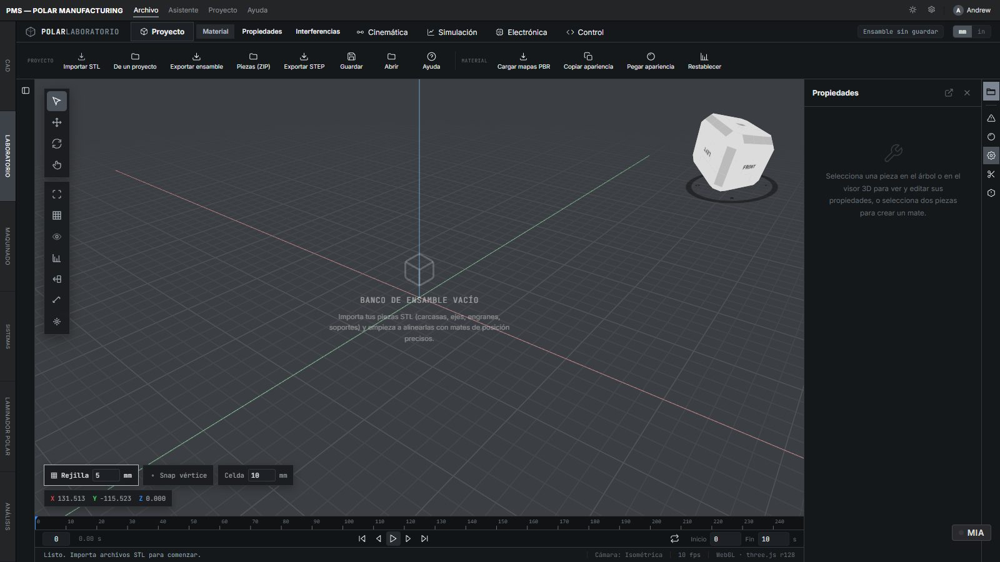
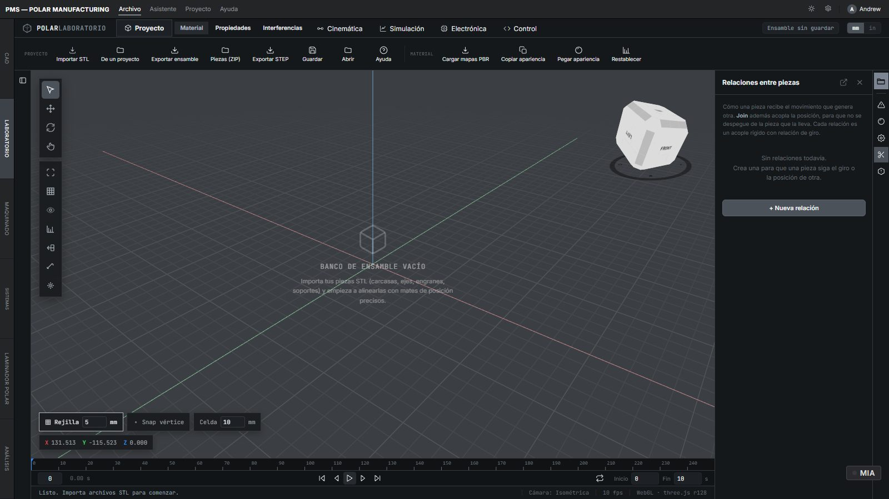
Otros botones de esta vista + Nueva relación
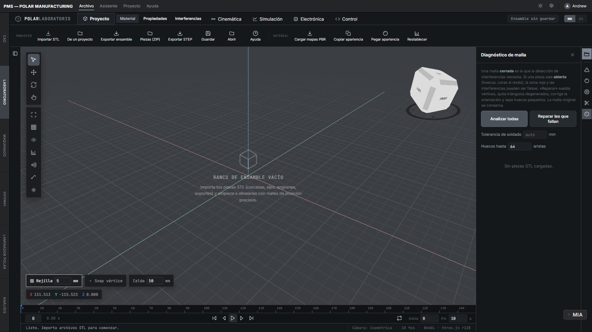
Unidad: mm · Rango u opciones: ≥ 0
De fábrica: 64 · Rango u opciones: ≥ 3
Otros botones de esta vista Analizar todas · Reparar las que fallan
Análisis por elementos finitos (FEA, con CalculiX) y de fluidos (CFD viento y flujo) sobre piezas importadas: árbol de simulación, malla, cargas y apoyos, y resultados.
Las pestañas de arriba cambian la cinta de botones; el árbol de simulación y el Panel de datos (turbina, gráficas, puntos de monitoreo) quedan fijos. Los botones con punto naranja y título «Próximamente» todavía no están conectados.
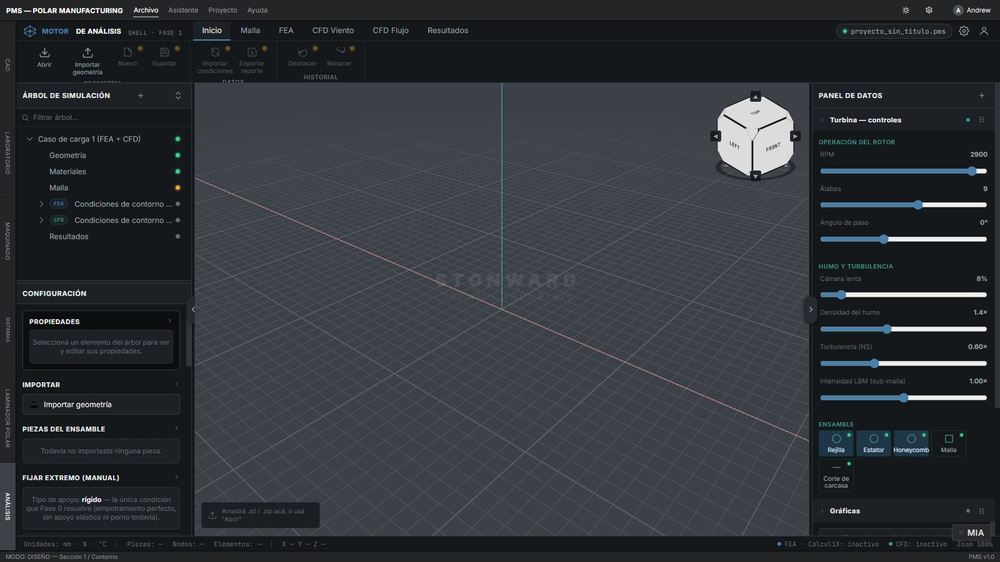
Sin opciones adicionales.
Unidad: mm · De fábrica: 5.7
Unidad: × · De fábrica: 2.2
De fábrica: 2900 · Rango u opciones: 0 a 3000
De fábrica: 9 · Rango u opciones: 3 a 13
Unidad: ° · De fábrica: 0 · Rango u opciones: -8 a 14
Unidad: % · De fábrica: 8
Unidad: × · De fábrica: 1.4 · Rango u opciones: 0.4 a 3
Unidad: × · De fábrica: 0.60
Unidad: × · De fábrica: 1.00
Configuración
Importar.stl sueltos o un.zip de proyecto de BENCH
Próximamente
Próximamente
Próximamente
Próximamente
Próximamente
Próximamente
Copiar todo el log
MIA: clic para hablar, clic derecho para escribir
Otros botones de esta vista Inicio · Malla · FEA · CFD Viento · CFD Flujo · Resultados · Importar geometría · Activar: clic en la pieza a fijar · Activar: clic en la pieza donde va la carga · Analizar todo · Rejilla · Estator · Honeycomb · Malla · Corte de carcasa
Próximamente
Próximamente
Próximamente
Próximamente
Próximamente
Otros botones de esta vista Generar malla
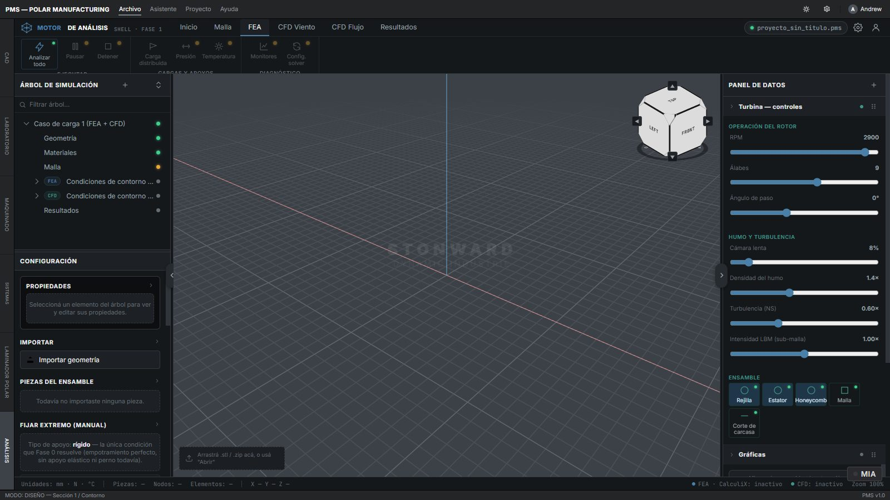
Próximamente
Próximamente
Próximamente
Próximamente
Próximamente — multi-material
Próximamente
Próximamente
Otros botones de esta vista Analizar todo
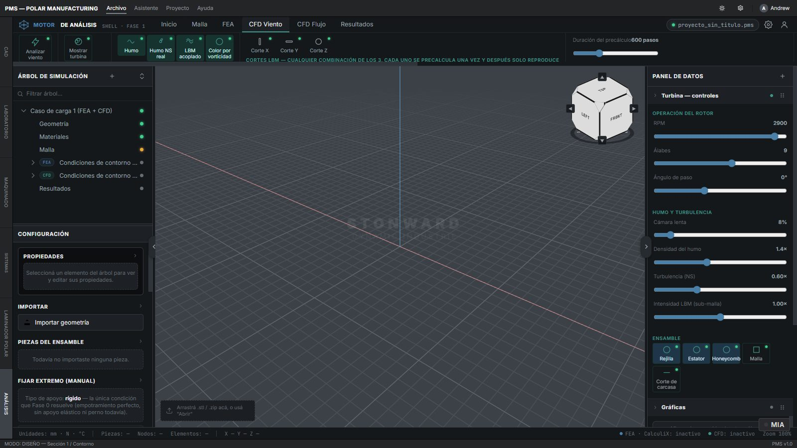
Unidad: pasos · De fábrica: 600 · Rango u opciones: 100 a 2000
La turbina axial completa (geometría, materiales, Navier–Stokes 3D + LBM acoplado y humo reales) — reacciona contra la pieza real importada, no contra un objeto
Humo Navier–Stokes: se advecta con el campo 3D resuelto de verdad (RK2), en vez del remolino analítico simple.
Acopla una sub-malla LBM D2Q9+Smagorinsky (la misma clase LBM2D) que le mete la turbulencia fina al humo, por descomposición de Helmholtz + hipótesis de Taylor.
Corta la pieza importada con un plano perpendicular a X y precalcula el análisis LBM sobre esa pantalla (se desvanece hacia el borde). Se puede combinar con Y y
Corta la pieza importada con un plano perpendicular a Y y precalcula el análisis LBM sobre esa pantalla. Se puede combinar con X y Z a la vez.
Corta la pieza importada con un plano perpendicular a Z (vista en planta) y precalcula el análisis LBM sobre esa pantalla. Se puede combinar con X y Y a la vez.
Otros botones de esta vista Analizar viento · Humo · Color por vorticidad
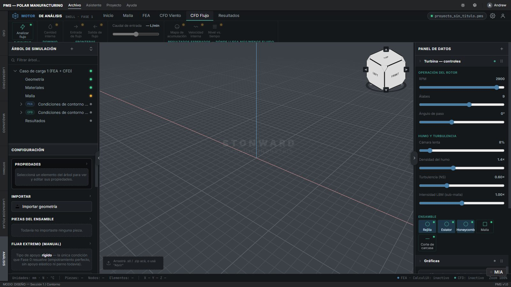
De fábrica: 50
Próximamente — Fase 2
Próximamente — Fase 2
Próximamente — Fase 2
Próximamente — Fase 2
Próximamente — Fase 2
Próximamente — Fase 2
Otros botones de esta vista Analizar flujo
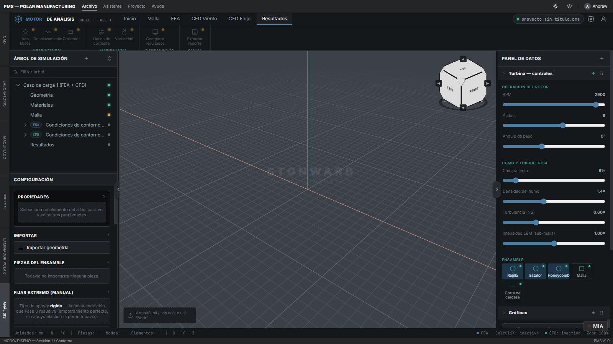
Próximamente — selector de mapa de color
Próximamente — selector de mapa de color
Próximamente — Fase 0 no calcula cortante todavía
Próximamente — depende de CFD Viento
Próximamente — depende de CFD Viento
Próximamente